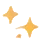

Welcome to
Tiny Japanese!
Learn Japanese the fun and easy way
—with Mika and Alex! ✨
Your Japanese
Learning Journey
From absolute beginner
to confident speaker!
- 1. LearnHiragana & Katakana
- 2. WatchFun Lessons
- 3. BuildYour Grammar
- 4. PracticeReal Conversations
- 5. Reach Your Goals!
